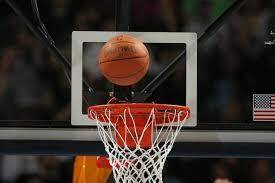
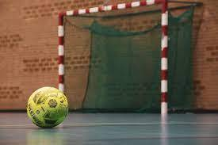

Bulutangkis
Cabang olahraga badminton menjadi salah satu di antara beberapa cabang olahraga lainnya yang cukup dikenal oleh banyak orang Indonesia dan juga dunia. Olahraga yang satu ini juga dikenal dengan istilah badminton. Kemudian, di Indonesia lebih familiar atau lebih dikenal banyak masyarakat Indonesia dengan istilah bulu tangkis.
Secara harfiah, jenis olahraga ini memang berisi gerakan menangkis bulu angsa yang dirangkai sedemikian rupa dan bulu angsa tersebut sering disebut dengan istilah cock. Kepopuleran olahraga ini tidak hanya terjadi di Indonesia saja, tapi juga dunia. Uniknya lagi, melalui ajang Olimpiade Tokyo 2020, Indonesia berhasil meraih medali emas dari pasangan ganda putri.
Sebagai salah satu jenis olahraga yang sangat populer, bulu tangkis kemudian sering dimainkan oleh semua kalangan, mulai dari anak-anak hingga orang-orang dewasa atau bisa juga kamu salah satu orang yang memainkan bulu tangkis.
Basket

Pertandingan basket pertama diselenggarakan pada tanggal 20 Januari 1892 dan terlahirlah nama basketball yang didapat dari salah satu murid James Naismith.
Sejak saat itu, olahraga basket pun sudah mulai menyebar ke Amerika Serikat, mulai dimainkan oleh banyak orang, dan diadakanlah kompetisi bola basket. Sekarang permainan bola basket ini sudah dapat dijumpai oleh orang-orang dengan mudah, di seluruh Kota di negara bagian Amerika Serikat dan seluruh dunia.
Perkembangan olahraga bola basket memiliki sejarah panjang di Indonesia, awalnya dimulai dengan masuknya imigran dari China ke Indonesia pada tahun 1920-an. Pendatang Cina membawa permainan bola basket yang telah dikembangkan di Tiongkok
Futsal

Permainan futsal pada mulanya dipopulerkan di kota Montevideo, Uruguay pada tahun 1930, oleh Juan Carlos Ceriani. Keunikan dari futsal memperolah perhatian yang positif di seluruh Negara Bagian Amerika Selatan, terutama di Negara Brasil. Ketrampilan yang dikembangkan dalam permainan ini bisa dilihat melalui berbagao gaya terkenal dunia yang telah diperlihatkan oleh para pemain Brasil di luar ruangan atau yang lebih tepatnya berada di lapangan berukuran biasa.
Pertandingan tingkat internasional pertama kali digelar pada tahun 1965, Negara Paraguay menjadi juara dari Piala Amerika Selatan untuk yang pertama kalinya. Enam perebutan Piala Amerika Selatan yang selanjutnya diselenggarakan hingga pada tahun 1979, dan seluruh gelaran juara disapu habis oleh Brasil. Brasil, berhasil meneruskan dominasinya dengan menjuarai Piala Pan Amerika yang pertama yang diselenggarakan pada tahun 1980 dan memenangkannya kembali pada perebutan yang berikutnya yakni pada tahun 1984.